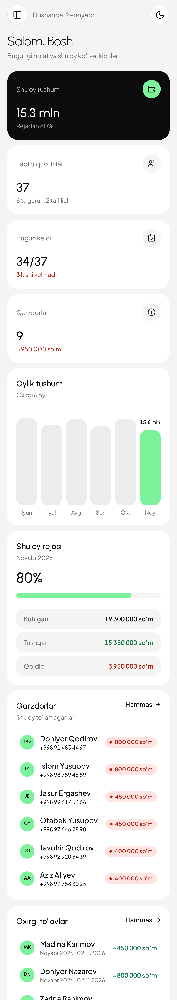
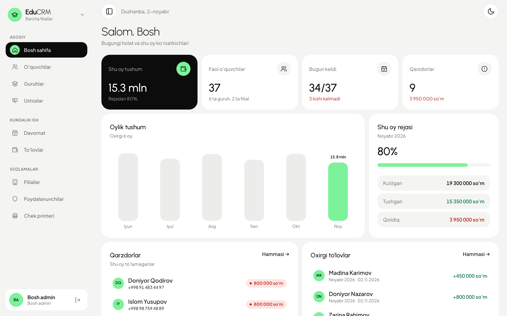
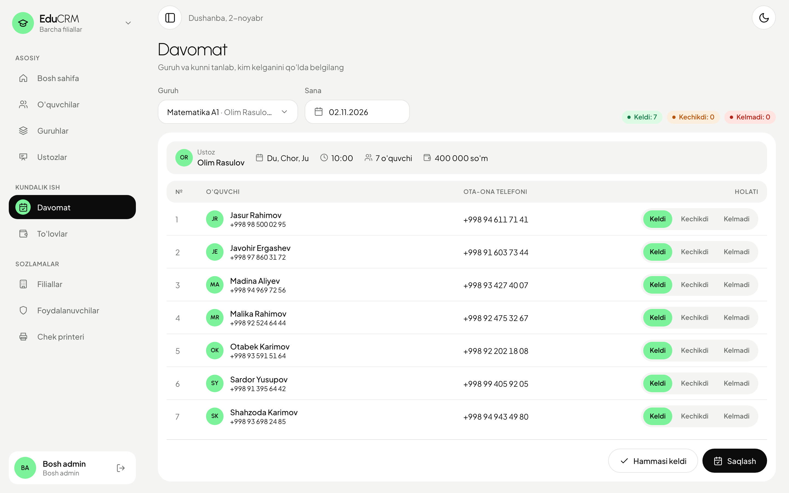
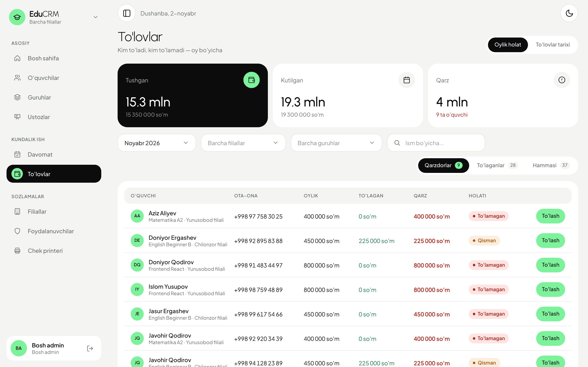
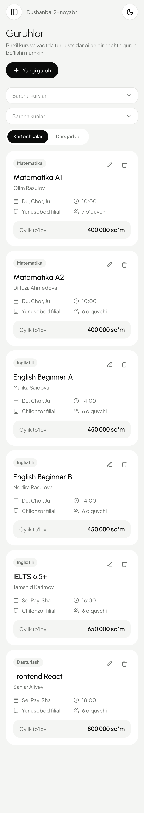
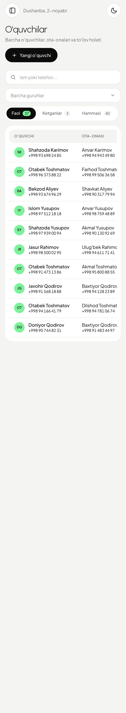

Tushum, bugungi davomat va qarzdorlar — kirishingiz bilan ko'rinadi.

Ustoz kim kelganini belgilaydi, ota-onaning raqami ham shu yerda.

Kim to'ladi, kim qarzdor — darhol ko'rinadi. To'lovdan keyin chek o'zi chiqadi.

Guruhlar, o'quvchilar, ustozlar va filiallar — doim cho'ntagingizda.

